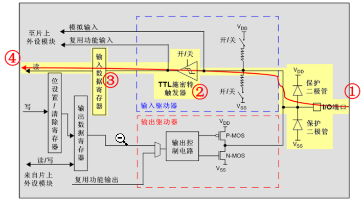
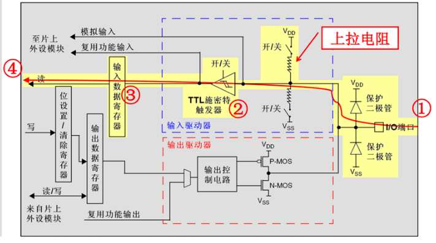
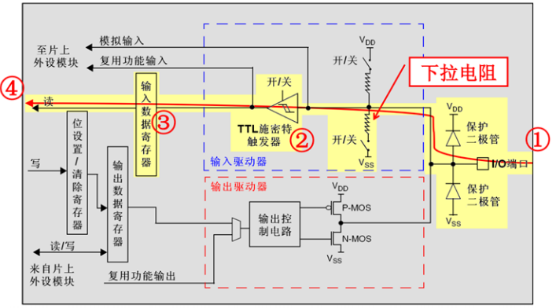
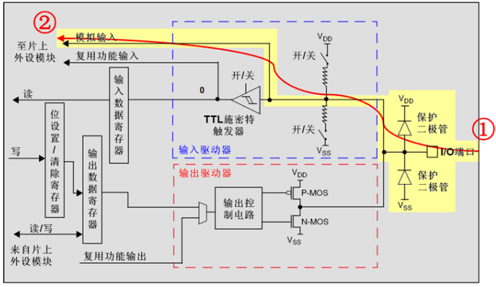
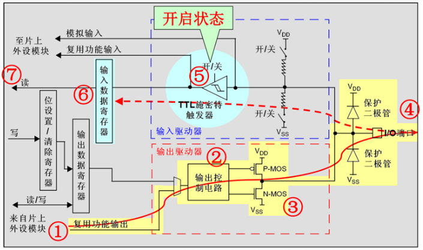

# 首先我们先来学习如何开时钟：
# 1：为什么需要开时钟？
我们可以通俗的理解时钟是外设电路的心脏，不打开时钟就无法使用。每个外设都有独立时钟，如果不打开时钟外设就不能用，原因就是为了低功耗节省用电，不用的外设可以不打开时钟
# 2：如何开启对应时钟？
首先，我们需要看芯片对应的外设总线架构图

假设我们现在需要开 GPIOA 的时钟，我们可以看到 GPIOA 是在 APB2 外设总线上的，那么开启 GPIOA 时钟代码如下：
RCC_APB2PeriphClockCmd(RCC_APB2Periph_GPIOA, ENABLE); |
关闭时钟代码如下：
RCC_APB2PeriphClockCmd(RCC_APB2Periph_GPIOA, DISENABLE); |
# 一、GPIO 是什么？
GPIO 全称 General Purpose Input Output 即通用输入 / 输出，其实 GPIO 的本质就是芯片的一个引脚，通常在 ARM 中所有的 I/O 都是通用的。不过由于每个开发板上都会设计不同的外围电路，这就造成 GPIO 的功能可能有所不同，大部分 GPIO 都是有复用功能的，比如有些 GPIO 可能是串口的 TX 或 RX，也可能是 I2C 的 SCL 或 SDA 线。
所以我们不仅要知道 GPIO 能够输出高低电平，还要理解为什么有些 GPIO 可以复用某些功能，而其他的不可以。
# 二、GPIO 内部结构

# 我们首先分析上面的结构电路：
1、保护二极管： 保护二极管从它的名字就不难想到他是用来对系统进行保护的，通过两个二极管的导通可以防止引脚外部输入电压过低或过高。当电压过高时，上方的保护二极管导通。当电压过低时，下方的二极管导通，防止不正常电压导入到芯片内部造成芯片烧毁。
2、P・MOS 管和 N・MOS 管： GPIO 经过两个二极管的保护后向上流入输入模式，向下流入输出模式，而输出模式的控制是由一个由 P・MOS 管和 N・MOS 管组成的单元电路，该电路主要是控制输出的模式，由该结构狗策划给你的单元电路具有推挽输出和开漏输出两种模式。
当系统配置为推挽输出模式时：
若向该结构中输入高电平，经过反向后，上方的 P-MOS 导通，下方的 N-MOS 关闭，对外输出高电平；
若向该结构中输入低电平时，经过反向后，下方的 N-MOS 管导通，上方的 P-MOS 关闭，对外输出低电平。
当引脚高低电平切换时，两个 MOS 管轮流导通，P 管负责灌电流，N 管负责拉电流，使其负载能力和开关速度都比普通的方式有很大的提高。推挽输出的低电平为 0V，高电平为 3.3V。
当系统配置为开漏输出模式时：
上方的 P-MOS 管完全不工作；
如果我们控制输出为 0，低电平，则 P-MOS 管关闭，N-MOS 管导通，使输出接地；
若控制输出为 1（它无法直接输出高电平）时，则 P-MOS 管和 N-MOS 管都关闭，所以开漏输出模式下引脚既不输出高电平，也不输出低电平，为高阻态。
推挽输出模式一般应用在输出电平为 0 和 3.3V 而且需要高速切换开关状态的场合。
开漏输出模式一般应用在 I2C、SMBUS 通信等需要 线与功能的总线电路中。
在单片机中除了必须用开漏模式的场合，一般习惯使用推挽输出模式
3、输出数据寄存器：前面我们知道双了 MOS 管结构电路的输入信号，是由 GPIO 输出数据寄存器 GPIOx_ODR 提供的，因此我们可以通过修改输出数据寄存器的值，就可以修改 GPIO 引脚的输出电平。而置位 / 复位寄存器 GPIOx_BSRR 可以通过修改输出数据寄存器的值，从而影响电路的输出。
4、复用功能输出：复用功能输出中的复用是指 STM32 的其他片上外设对 GPIO 引脚进行控制，此时 GPIO 引脚用作该外设功能的一部分，算是第二用途。从其他外设引出来的复用功能输出信号与 GPIO 本身的数据寄存器都连接到双 MOS 管结构的输入中。
# 三、输入输出模式
# GPIO 八种模式
| 模式 | 介绍 | |
|---|---|---|
| 浮空输入 | GPIO_Mode_IN_FLOATING | 若引脚悬空，则电平不确定 |
| 上拉输入 | GPIO_Mode_IPU | 内部连接上拉电阻，悬空时默认高电平 |
| 下拉输入 | GPIO_Mode_IPD | 内部连接下拉电阻，悬空时默认低电平 |
| 模拟输入 | GPIO_Mode_AIN | GPIO 无效，引脚直接接入内部 ADC |
| 开漏输出 | GPIO_Mode_Out_OD | 高电平为高阻态，低电平接 VSS（负极） |
| 推挽输出 | GPIO_Mode_Out_PP | 高电平接 VDD，低电平接 VSS |
| 复用开漏输出 | GPIO_Mode_AF_OD | 由片上外设控制，高电平为高阻态，低电平接 VSS |
| 复用推挽输出 | GPIO_Mode_AF_PP | 由片上外设控制，高电平接 VDD，低电平接 VSS |
# 浮空输入
浮空输入模式下， I/O 端口的电平信号直接进入输入数据寄存器。也就是说，I/O 的电平状态是不确定的，完全由外部输入决定；如果在该引脚悬空（在无信号输入）的情况下，读取该端口的电平是不确定的，通常用于 IIC 、 USART 等总线设备上。

# 上拉输入模式
上拉输入模式下， I/O 端口的电平信号直接进入输入数据寄存器。但是在 I/O 端口悬空（在无信号输入）的情况下，输入端的电平保持在高电平（并且在 I/O 端口输入为低电平的时候，输入端的电平也是低电平）

# 下拉输入模式
下拉输入模式下， I/O 端口的电平信号直接进入输入数据寄存器。但是在 I/O 端口悬空（在无信号输入）的情况下，输入端的电平保持在低电平；并且在 I/O 端口输入为高电平的时候，输入端的电平也是高电平。

# 模拟输入模式
模拟输入模式下， I/O 端口的模拟信号（电压信号，而非电平信号）直接模拟输入到片上外设模块，比如 ADC 模块等。

# 开漏输出模式
当系统配置为开漏输出模式时：
上方的 P-MOS 管完全不工作；
如果我们控制输出为 0，低电平，则 P-MOS 管关闭，N-MOS 管导通，使输出接地；
若控制输出为 1（它无法直接输出高电平）时，则 P-MOS 管和 N-MOS 管都关闭，所以开漏输出模式下引脚既不输出高电平，也不输出低电平，为高阻态。
# 开漏复用输出模式
开漏复用输出模式，与开漏输出模式很是类似。只是输出的高低电平的来源，不是让 CPU 直接写输出数据寄存器，取而代之利用片上外设模块的复用功能输出来决定的，一般用于片内外设功能： TX1，MOSI，MISO，SCK，SS
# 推挽输出模式
当系统配置为推挽输出模式时：
若向该结构中输入高电平，经过反向后，上方的 P-MOS 导通，下方的 N-MOS 关闭，对外输出高电平；
若向该结构中输入低电平时，经过反向后，下方的 N-MOS 管导通，上方的 P-MOS 关闭，对外输出低电平。
当引脚高低电平切换时，两个 MOS 管轮流导通，P 管负责灌电流，N 管负责拉电流，使其负载能力和开关速度都比普通的方式有很大的提高。推挽输出的低电平为 0V，高电平为 3.3V。
# 推挽复用输出模式
推挽复用输出模式，与推挽输出模式很是类似。只是输出的高低电平的来源，不是让 CPU 直接写输出数据寄存器，而是利用片上外设模块的复用功能输出来决定的，常见采用推挽输出模式的一般为片内外设功能 IIC 的 SCL 、 SDL 。

# 四、开漏输出和推挽输出的区别
开漏输出和推挽输出模式的区别主要是开漏输出只可以输出强低电平，高电平得靠外部电阻拉高。输出端相当于三极管的集电极，适合于做电流型的驱动，其吸收电流的能力相对强 (一般 20ma 以内)；推挽输出可以输出强高、低电平，连接数字器件。
| 推挽输出 | 开漏输出 | |
|---|---|---|
| 高电平驱动能力 | 强 | 由外部上拉电阻提供 |
| 低电平驱动能力 | 强 | 强 |
| 电平跳变速度 | 快 | 由外部上拉电阻决定，电阻越小，反应越快，功耗越大 |
| 线与功能 | 不支持 | 支持 |
| 电平转换 | 不支持 | 支持 |
# 五、STM32 中 GPIO 的配置
初始化 GPIO 的常用格式是：
GPIO_InitTypeDef GPIO_InitStructure; | |
GPIO_InitStructure.GPIO_Pin = GPIO_Pin_5; //LED0-- PB.5 端口配置 | |
GPIO_InitStructure.GPIO_Mode = GPIO_Mode_Out_PP; // 推挽输出 | |
GPIO_InitStructure.GPIO_Speed = GPIO_Speed_50MHz;// 速度 50MHz | |
GPIO_Init(GPIOB, GPIO_InitStructure);// 根据设定参数配置 GPIO |
IO 口速度设置有三个可选值：
typedef enum | |
{ | |
GPIO_Speed_10MHz, | |
GPIO_Speed_2MHz, | |
GPIO_Speed_50MHz | |
}GPIOSpeed_TypeDef; |
模式则有 8 个可选定义如下：
typedef enum | |
{ GPIO_Mode_AIN = 0x0, // 模拟输入 | |
GPIO_Mode_IN_FLOATING = 0x04, // 浮空输入 | |
GPIO_Mode_IPD = 0x28, // 下拉输入 | |
GPIO_Mode_IPU = 0x48, // 上拉输入 | |
GPIO_Mode_Out_OD = 0x14, // 开漏输出 | |
GPIO_Mode_Out_PP = 0x10, // 通用推挽输出 | |
GPIO_Mode_AF_OD = 0x1C, // 复用开漏输出 | |
GPIO_Mode_AF_PP = 0x18 // 复用推挽 | |
}GPIOMode_TypeDef; |
名词解释：
高阻态：是一个数字电路里常见的术语，指的是电路的一种输出状态，既不是高电平也不是低电平，如果高阻态再输入下一级电路的话，对下级电路无任何影响，和没接一样，如果用万用表测的话有可能是高电平也有可能是低电平，随它后面接的东西定的。电路分析时高阻态可做开路理解。你可以把它看作输出（输入）电阻非常大。它的极限状态可以认为悬空（开路）。也就是说理论上高阻态不是悬空，它是对地或对电源电阻极大的状态。而实际应用上与引脚的悬空几乎是一样的。